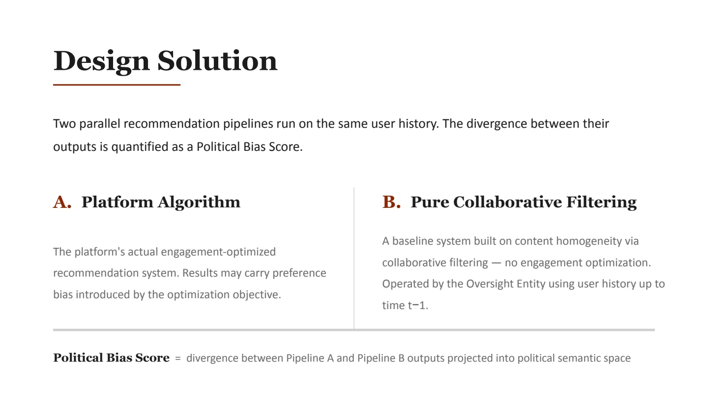
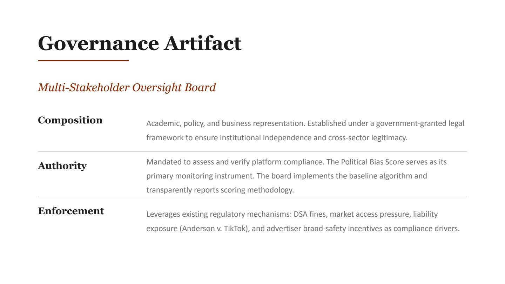

Construct validity
Connect feed divergence with measurable polarization outcomes.
Algorithmic accountability · political polarization
Feed-level auditing
This concept compares a platform feed with a transparent baseline built from the same user history and candidate content. The difference between the two feeds becomes an object for audit.
Role
Researcher on a four-person team
Team
Simi Olusola-Ajayi, Doni Moon, Priyal Shrivastava, Bhargavee Chavarkar
Artifact
Audit and governance model
Stage
Concept developmentrequires validation
01 · Policy problem
Recommendation systems make repeated choices about what each person sees. A platform may describe the goals of its system, but an outside researcher cannot usually inspect the full model or reproduce the feed.
A single post reveals little about a ranking system. The pattern across many recommendations may show whether the system consistently moves a feed toward engagement, similarity, or another objective. Auditors need a clear comparison point for interpreting that pattern.
02 · Proposed method
The same user history and set of candidate posts enter two recommendation systems. One produces the platform feed. The other produces a public reference feed using a published collaborative-filtering rule.
The platform’s production system ranks the available posts using its own objective.
A transparent collaborative-filtering system ranks the same posts using the same user history.
The two ranked lists are projected into a political semantic space. Their distance becomes the proposed Political Bias Score.

03 · Reading the score
The score represents the distance between two ranked outputs. It is intended to make a pattern of feed choices measurable and comparable over time.
04 · Institutional design
The concept assigns the reference model and audit process to an independent, multi-stakeholder body rather than to the platform being evaluated.

05 · Interpretation
Next research phase
Return to research
Technical AI safety · working paperTraining an LLM to win at Werewolf